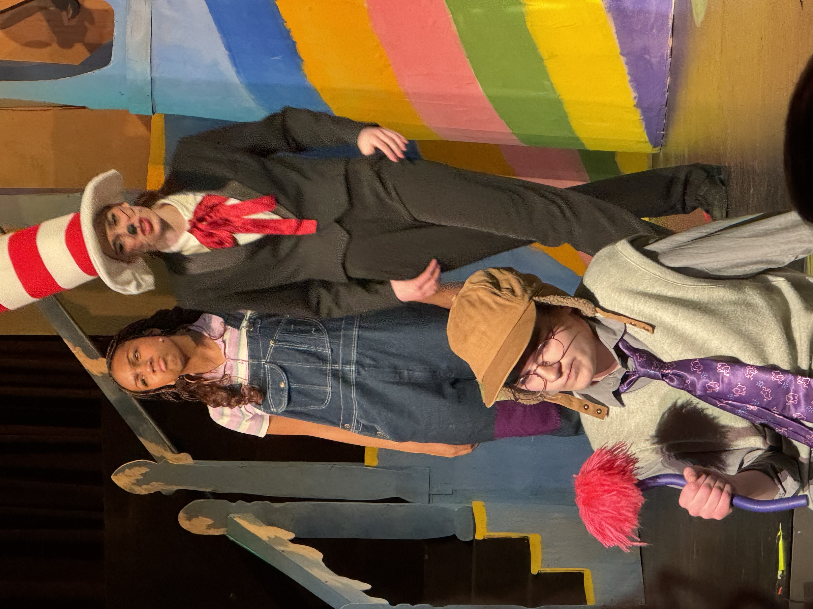
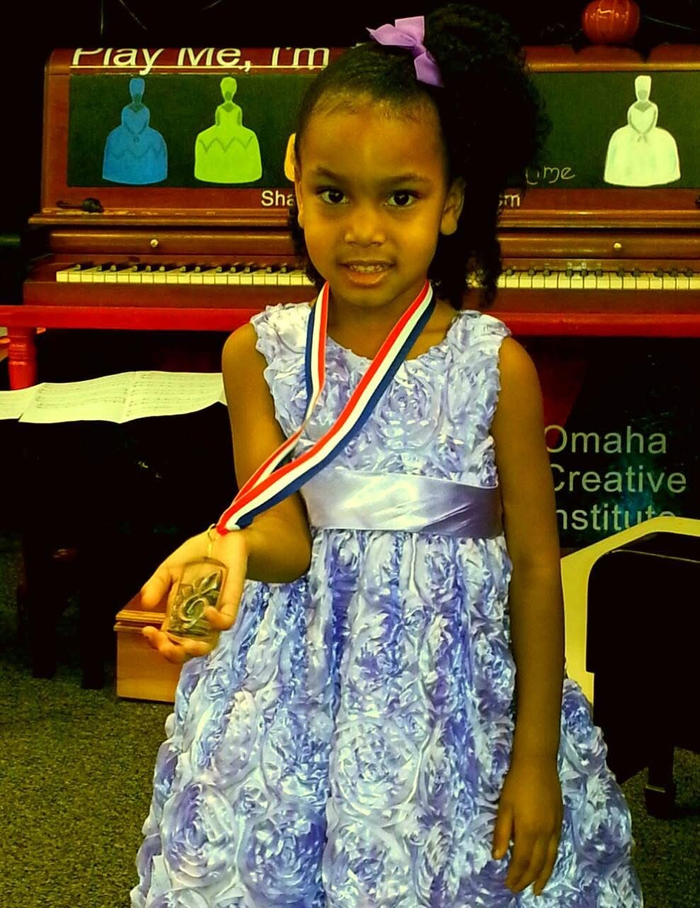
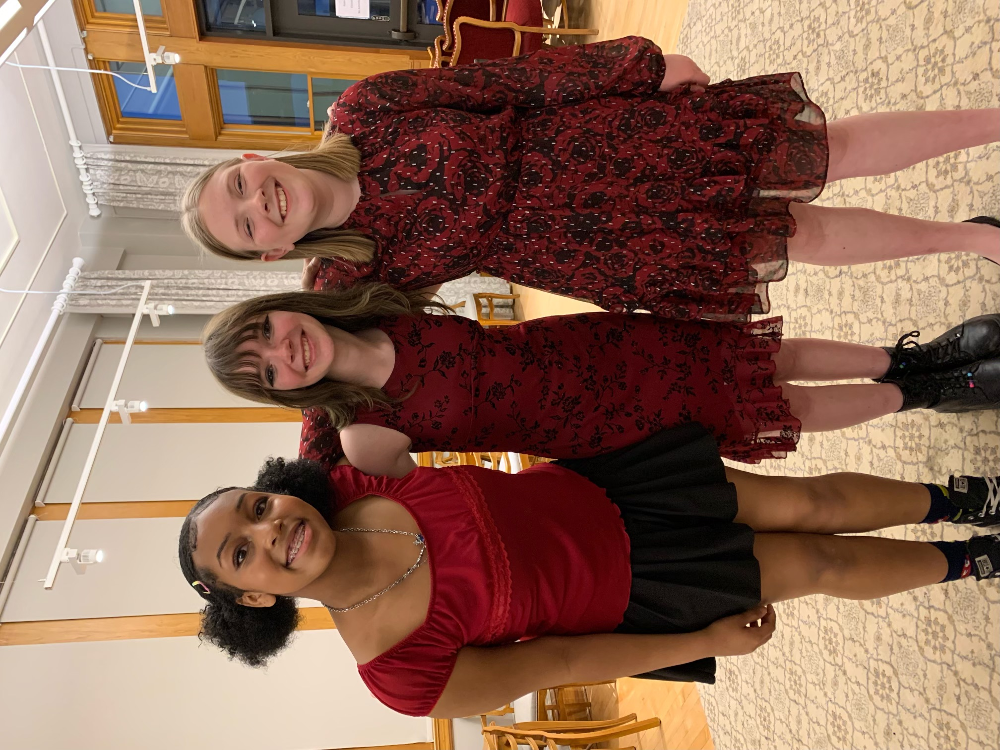
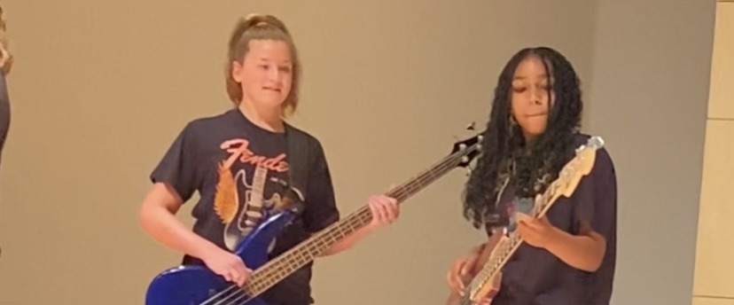

Theater
In Alleyah's sophomore year, following her involvement in a prior production, she bravely auditioned for a prominent role in "Seussical the Musical" and successfully secured the coveted part of Jojo!
Music
  Alleyah's musical journey commenced at the tender age of 3 when she first embraced the piano. As her passion for music blossomed, she expanded her repertoire to include instruments like the bass guitar and drums. With dreams of one day joining a band, Alleyah's musical aspirations continue to soar.
Mathematics

You might not typically consider math a hobby, but for Alleyah, it's a passion that knows no bounds. Constantly seeking challenges, she effortlessly incorporates math into various aspects of her life, including engaging her younger brother in mathematical puzzles. By her sophomore year, Alleyah had already conquered Advanced Calculus, showcasing her exceptional aptitude for the subject. In addition to her academic achievements, she actively participates in math camps and the math club at school, further fueling her love for mathematics.